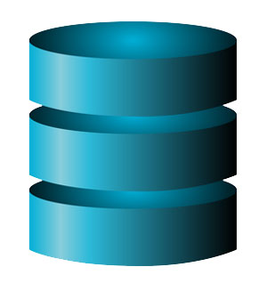

Programación de Aplicaciones Telemáticas
Tema 9: Introducción a la persistencia de datos
Agenda
Sessión 1
- Introducción
- Tipos de base de datos
- Bases de datos relacionales
- Bases de datos no relacionales
- SQL
- Referencias
Introducción
A database is an organized collection of structured information, or data, typically stored electronically in a computer system. A database is usually controlled by a database management system (DBMS).
Tipos de bases de datos
- Bases de datos relacionales
- Bases de datos clave-valor
- Bases de datos documentales
- Bases de datos orientadas a Time Series
- Base de datos orientada a grafos
Bases de datos relacionales
Introducción
Una base de datos relacional es un tipo de base de datos que almacena y proporciona acceso a puntos de datos relacionados entre sí. Las bases de datos relacionales se basan en el modelo relacional, una forma intuitiva y directa de representar datos en tablas.
Bases de datos relacionales
Introducción
En una base de datos relacional, cada fila en una tabla es un registro con una ID única, llamada clave. Las columnas de la tabla contienen los atributos de los datos y cada registro suele tener un valor para cada atributo, lo que simplifica la creación de relaciones entre los puntos de datos.
Bases de datos relacionales
Estructura de las bases de datos relacionales
El modelo relacional implica que las estructuras lógicas de los datos (las tablas, las vistas y los índices) estén separadas de las estructuras de almacenamiento físico. Gracias a esta separación, los administradores de bases de datos pueden gestionar el almacenamiento físico de datos sin que eso influya en el acceso a esos datos como estructura lógica.
Bases de datos relacionales
Estructura de las bases de datos relacionales
Tables:
A table is a collection of related data held in a table format within a database. It consists of columns and rows.
https://en.wikipedia.org/wiki/Table_(database)
Bases de datos relacionales
Estructura de las bases de datos relacionales
Tables:

Bases de datos relacionales
Estructura de las bases de datos relacionales
Views:
In a database, a view is the result set of a stored query on the data, which the database users can query just as they would in a persistent database collection object. This pre-established query command is kept in the database dictionary.
https://en.wikipedia.org/wiki/View_(SQL)
Bases de datos relacionales
Estructura de las bases de datos relacionales
Views:

Bases de datos relacionales
Estructura de las bases de datos relacionales
Indexes:
A database index is a data structure that improves the speed of data retrieval operations on a database table at the cost of additional writes and storage space to maintain the index data structure.
https://en.wikipedia.org/wiki/Database_index
Bases de datos relacionales
Estructura de las bases de datos relacionales
Indexes:

Bases de datos relacionales
Modelo Entidad-Relación
Un modelo entidad-relación es una herramienta para el modelo de datos, la cual facilita la representación de entidades de una base de datos. Fue definido por Peter Chen en 1976.

Bases de datos relacionales
Alternativas:
https://db-engines.com/en/ranking/relational+dbms
Bases de datos clave valor
Introducción
Una base de datos clave-valor es un tipo de base de datos no relacional que utiliza un método simple de clave-valor para almacenar datos. Una base de datos clave-valor almacena datos como un conjunto de pares clave-valor en los que una clave sirve como un identificador único. Tanto las claves como los valores pueden ser cualquier cosa, desde objetos simples hasta objetos compuestos complejos.
Bases de datos clave valor
Alternativas:
- Redis
- Amazon DynamoDB
https://db-engines.com/en/ranking/key-value+store
Bases de datos documentales
Introducción
Una base de datos documental está constituida por un conjunto de programas que almacenan, recuperan y gestionan datos de documentos o datos de algún modo estructurados. Este tipo de bases de datos constituyen una de las principales subcategorías dentro de las denominadas bases de datos NoSQL.
Bases de datos documentales
Alternativas:
Bases de datos orientadas a Time Series
Introducción
Una base de datos de series de tiempo (TSDB) es un sistema de software que está optimizado para manejar datos de series de tiempo, matrices de números indexados por tiempo (un intervalo de fecha / hora)
Bases de datos orientadas a Time Series
Alternativas:
- InfluxDB
- Prometheus
https://db-engines.com/en/ranking/time+series+dbms
Base de datos orientada a grafos
Introducción
In computing, a graph database (GDB) is a database that uses graph structures for semantic queries with nodes, edges, and properties to represent and store data. A key concept of the system is the graph (or edge or relationship). The graph relates the data items in the store to a collection of nodes and edges, the edges representing the relationships between the nodes.
Base de datos orientada a grafos
Alternativas:
- Neo4j
https://db-engines.com/en/ranking/graph+dbms
SQL
SQL is a programming language used by nearly all relational databases to query, manipulate, and define data, and to provide access control.
SQL
SELECT:
SELECT column1, column2, ...
FROM table_name;
SQL
INSERT:
INSERT INTO table_name (column1, column2, column3, ...)
VALUES (value1, value2, value3, ...);
SQL
UPDATE:
UPDATE table_name
SET column1 = value1, column2 = value2, ...
WHERE condition;
SQL
DELETE:
DELETE FROM table_name WHERE condition;
Referencias
- https://www.iso.org/standard/63555.html
- https://en.wikipedia.org/wiki/SQL
- https://www.oracle.com/database/what-is-database/
- https://es.wikipedia.org/wiki/Modelo_entidad-relaci%C3%B3n
- https://db-engines.com/en/ranking
- https://es.wikipedia.org/wiki/Base_de_datos_documental